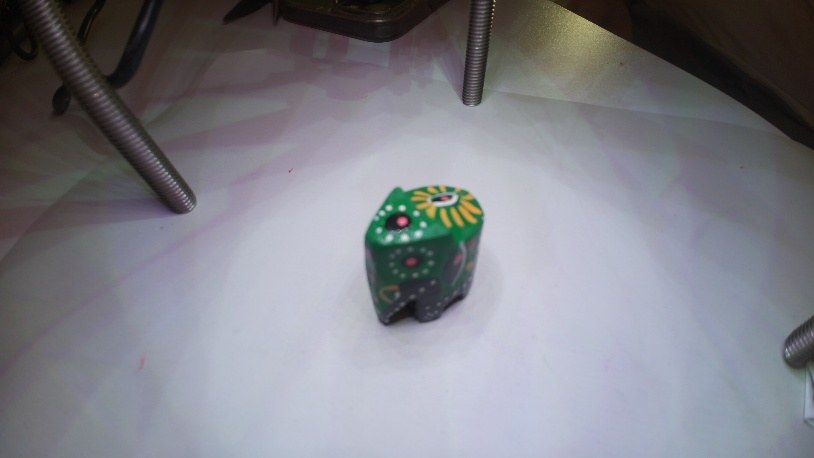
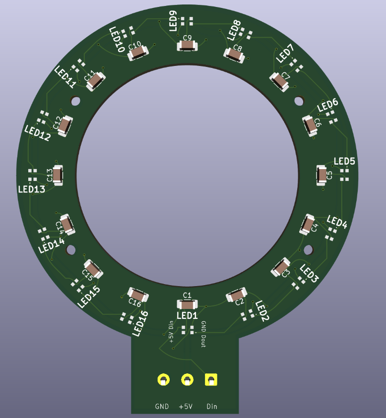
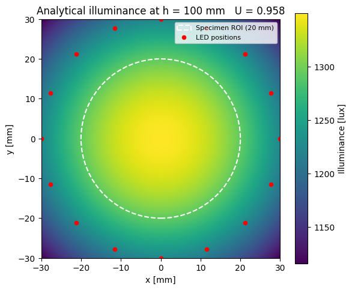
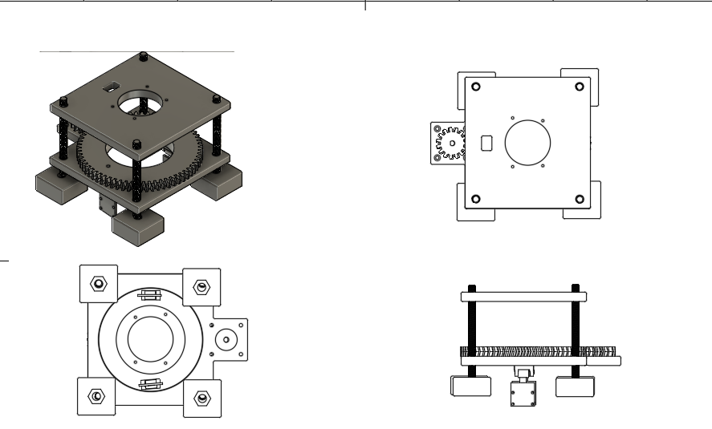
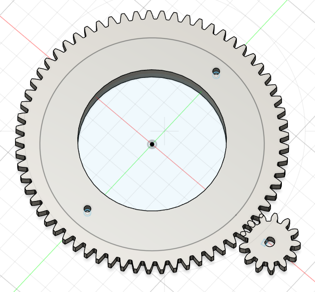
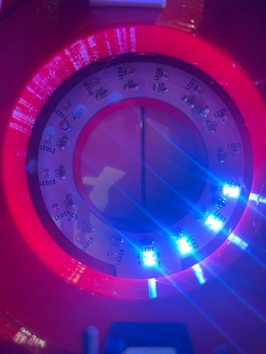
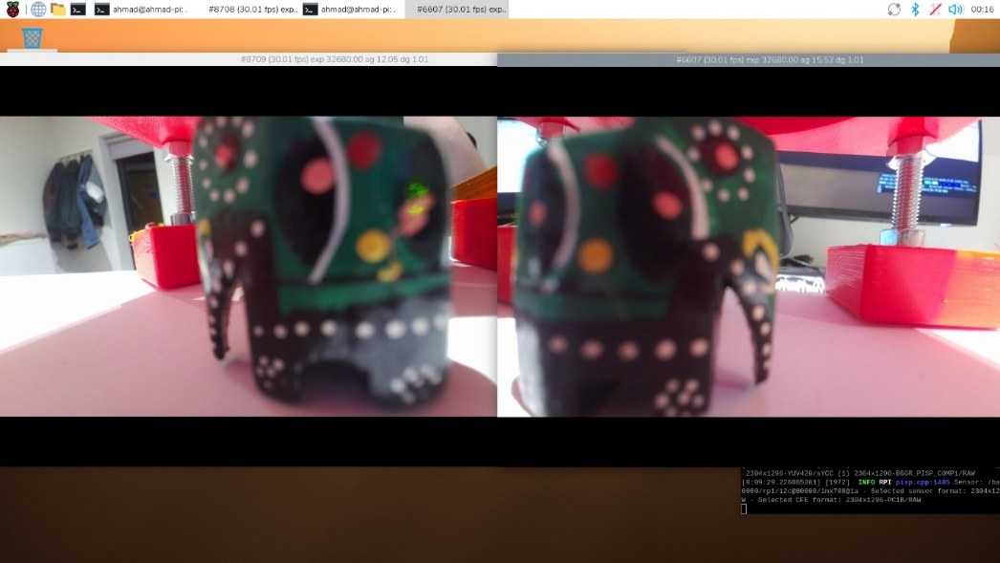
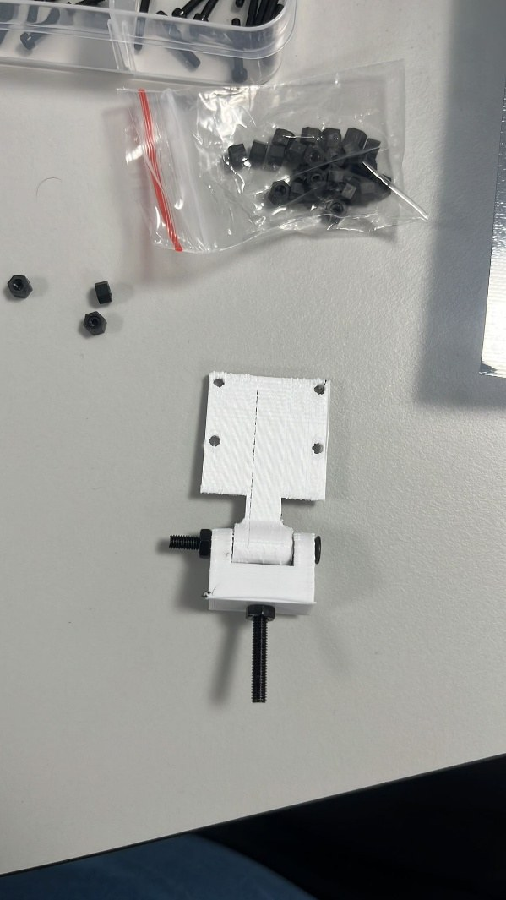
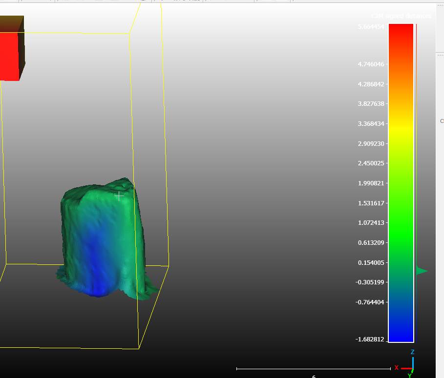

Automated 3D scanning and illumination rig
My final-year individual project at the University of Nottingham. Keyhole surgery gives the surgeon a narrow view with poor depth perception. This prototype combines a custom LED ring for even lighting with two rotating cameras, and turns the images into a textured 3D model of the operating area.
- Role
- Solo: requirements, electronics, firmware, mechanical design and validation
- Year
- 2025 to 2026
- Cost
- £167.71 against a £200 cap
- Outcome
- First in the dissertation. 7 of 9 specifications passed, 2 partly passed, none failed
- Tools
- ESP32 (C++, FastLED, AccelStepper), Raspberry Pi 5, two Camera Module 3 Wide, KiCad, Fusion 360, Python and OpenCV, ReCap Pro, CloudCompare, MeshLab


The idea
Existing low-cost photogrammetry setups fall into two groups. Multi-camera arrays work well but cost thousands (one system I reviewed cost about US$8,000). Turntable systems are cheap but rotate the object, and you can't rotate a patient. I couldn't find a compact rig that moves the cameras around a stationary object at close range, so I built one.
Two cameras sit 180° apart on a ring gear. The ring only turns through 180°, so each camera covers half of the circle and together they cover all 360° without the ribbon cables tangling.
How it fits together
Lighting
- ESP32FastLED
- LED ring PCB16 WS2812B-2020 LEDs
Motion
- ESP32AccelStepper
- A4988Stepper driver, 1.5 A limit
- NEMA 17Stepper motor
- 4:1 gearsDouble-helical, 0.45° per step
- Two camerasMounted 180° apart
Imaging and validation
- Two Camera Module 3 Wide34 images each
- Raspberry Pi 5Capture and live view
- ReCap ProPhotogrammetry
- CloudCompare and MeshLabAccuracy and completeness
What I built
- LED ring PCB. A ring of 16 WS2812B-2020 addressable LEDs, designed in KiCad (48 mm inner and 72 mm outer diameter). Before the layout I modelled the LEDs as Lambertian point sources: the model predicted 1,350 lux and a uniformity ratio of 0.958 at the 100 mm working distance. Six LEDs would have met the brightness target, so I used 16 for uniformity. The 5 V rail runs as a closed loop so every LED has two supply paths, roughly halving the worst-case voltage drop. I hand-soldered the 2 mm packages and found daisy-chain faults one LED at a time with a FastLED test sketch.
- Motion. An ESP32 drives a NEMA 17 stepper through an A4988 driver, with the current limit set to 1.5 A through VREF. AccelStepper ramps the speed up and down so the motor doesn't stall or jolt the gears. A 15-tooth pinion drives a 60-tooth ring gear, giving 0.45° per step.
- Imaging. Two Camera Module 3 Wide units on a Raspberry Pi 5 take 34 images each at 5.4° spacing (predicted overlap 94.7%) and show a live side-by-side view. ReCap Pro turns the 68 images into a textured OBJ mesh.
- Mechanics. Base, LED ring stand, gears, camera mounts and legs designed in Fusion 360, 3D printed in PLA and clamped together on M8 threaded rods.
- Validation. Python scripts to measure illumination uniformity from photos and image overlap with SIFT feature matching, plus cloud-to-mesh comparison in CloudCompare and topology checks in MeshLab. Every test was tied to one of nine written specifications.




Results
| Specifications | 7 of 9 passed, 2 partly passed, none failed |
|---|---|
| Cost | £167.71 (cap £200) |
| Light at the centre, 100 mm | 1,140 lux (target 500) |
| Lighting uniformity, three runs | 0.906 to 0.913 (target 0.90) |
| Overlap between images | 93% (target 80%) |
| Finest detail resolved at 100 mm | 0.25 mm, limited by the printed test chart |
| Reconstruction accuracy | Standard deviation 0.184 mm, 91.2% of points within ±0.1 mm |
| Live view | Two cameras at 30 fps, 2304 × 1296 |


What went wrong
- The first motor driver couldn't move the gears. The L298N worked with no load but stalled once the ring gear was fitted, then went into thermal shutdown when I raised the current. Its BJT outputs drop 3.2 to 4.9 V, so the motor never saw enough voltage. I replaced it with an A4988, which I had specified, ordered and tested within about a week.
- The gears vibrated and slipped. The first spur gears were noisy and vibrated, which risked blurring the images, so I redesigned them as 30° double-helical gears, kept under the 45° overhang limit for 3D printing. The press-fit pinion slipped on the motor shaft, so I added a grub screw that locks onto the shaft's flat.
- The cameras aren't perfectly in sync. The two streams were 105 ms apart against a 30 ms target, because the Pi triggers the captures one after the other in software. It doesn't affect scans of a still object. The fix is hardware-triggered global-shutter cameras, which were outside the budget.
- A camera mount drifted mid-scan. The angle-adjustable pin joint on one 3D-printed camera stand wore under repeated start-stop cycles and let the camera tilt upwards. That scan lost 11.5% of its surface area and went from 2 holes to 6. I located the problem with a reverse cloud-to-mesh comparison and MeshLab measurements. The fix is a fixed-angle aluminium bracket.


What I'd do next
- Replace the adjustable camera stands with fixed-angle aluminium brackets.
- Switch to WS2813 LEDs, whose backup data line stops one bad joint from taking out the rest of the ring.
- Use hardware-triggered global-shutter cameras to bring the camera offset under 30 ms.
- Run reconstruction locally on a GPU instead of in the cloud, to cut it from hours to minutes.